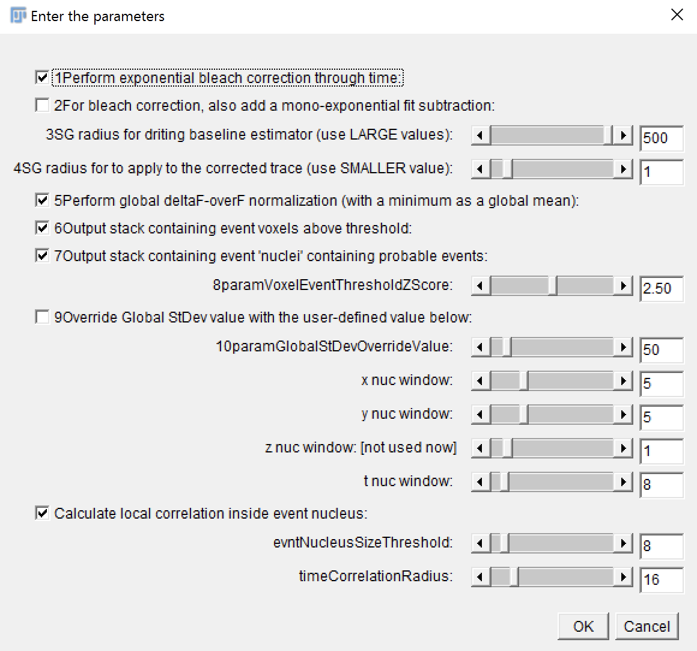

Software Information
Here you'll find information about the tools that we are using, how to install and details to take care about it
In House Software
Here will be information about the software that has beeen developed in the lab during the last years.
Iaroslav Image J Scripts
Here will be information about the scripts that Iaroslav developed for ImageJ analysis. Documentation about this software could be found in the article:
You can find a tutorial about Iaroslav's tools in this next videos:
Batch-processing of acqusition stacks
It creates a single file with all the .tif files.
Gaussian_Filter5D
A simple 5D Gaussian filter plugin for signal processing. This was currently missing from the default ImageJ tools, since the built-in 3D filter functionality does not fully support filtering higher-order stacks (such as combined z+t). The current plugin is natively capable of processing a 5-D stack, and is able to filter in all dimensions (except across channels). A DC offset option is provided to blank arbitrary noise values below a selectable threshold.
MultiROI_TZ_profiler
A multi-ROI trace plotter allowing for interactive, real-time exploration of the 5D data by the user. This expands the functionality of the built-in “Z-axis profiler” tool set up by the NIH developers (Baler and Rasband, 2003) which allows for plotting the average ROI signal through space or time. Using the Z-axis profiler code as a starting base, we added the multi-ROI (multi-trace) capability, as well as the capability of adding an externally loaded trace (e.g., an electrophysiology trace) to the plot. A number of other user-friendly options such as filtered trace overlay, color-coding and various display normalization options, are also provided via an extra interface window. The plugin implements dynamic update capability, allowing the user to move and modify ROIs, change channels and focal planes, and see the resulting trace changes in real time.
Correlation_Calculator

A cross-correlation plugin that performs a comprehensive list of voxel-by-voxel calculations through time in search of temporal correlation versus either an externally loaded trace, a binarized stimulus waveform, or an individual ROI extract. This allows for the easy identification of putatively time-locked regions within a 3D imaging volume. To improve the performance under the jittering response conditions, cumulative cross-correlation (area under the curve) is available in addition to the normal peak calculation. In our studies, we have applied this plugin to axonal stimulation paradigms (minimal stimulations) in the dentate gyrus and have thereby identified several regions within an astrocyte that reliably responded to the stimuli. Such regions corresponded to a fraction of <1% of the total analyzed astrocytic volume (Bindocci et al., 2017).
Version 2.0
Recently Iaroslav released a new version of the tool that will provide us a Megastack as a result. The image must be in 32bits and the t dimension must be corrected defined. If not yoou can Re-Order Hyperstacks Dimensions.

When calculating the $ \frac{\Delta f}{f}$. The f instead of being the average when it goes down the global average is defined like that one.
| Megastack Channel | Definition |
|---|---|
| Channel1: | Raw Data if bleached |
| Channel2: | Raw Data |
| Channel3: | Event detected |
| Channel4: | Event Nuclei |
| Channel5: | Event Cross-Correlation |
| Channel6: | Hybrid Event map with threshold from CCC and Z-Score |
Those channels will be multiplied by 2 if 2 recording channels has been analyzed
This tool is available in this folder in the NAS:
:\\AV_NAS_PRIVATE\Vivar\Tools\Iaroslav\Correlation_Calculator\ZVivarToolsIaroslavCorrelation_Calculator.javaNicolas Matlab Tools
SCAP
Allow us to calculate ROI over a process and calculate the number of events depending of the Regional maximum.
XTN Software
This is an implementation of the SCAP software to work in 3D. After defining a core (i.e. soma) the tool will caculate geodesic spheres with an specific separation that will crop the mesh.
Third parties Software
Information about the software that we uses usually in the lab.
JupyterLab
A jupyter notebook is an interactive platform that allow us to create documents based on text, code and interactive plots and everything through the browser. Jupyterlab take the different parts of the classic notebooks and provide a more user-friendly with extensions. Here you have a nice 10 min summary:
How to Install
To install jupyterlab first you need to have Python3 installed, we recommend the installation of anaconda that will manage the packages installed in python too.
- Install Anaconda from here: Choose the version Python 3.7
- Open the Windows powershell or the terminal
- Install jupyterlab introducing this command:
conda install -c conda-forge jupyterlab - Open jupterlab in your broseer using this command:
jupyter lab
Imaris
We are using actually two versions of IMARIS:
- IMARIS 8: Belongs to the lab and is node-locked to dnfvoltdatasrv2 using a network card's MAC address as the key. It could be use only on that computer but if we talk to the company could be transfered to other one. (order ID: k7qy-mcsf-45gq-ed9p)
- IMARIS 9+: Using floating licenses belonging to DNF/UNIL. The availability of this licenses depends of the users number using at that time. This could be used in dnfvoltdatasv1.
Imaris License Manager
Imaris 9+ node-locked license cannot be used on the machines with Remote-Desktop enabled (because multiple users can simultaneously run it remotely).
This means that Imaris 8.4 is the latest version that we could use in dnfoltdatasrv2 with as many users as we need conected at the same time.
To overcome this problem we bought Imaris License Manager which ca convert our single node-locked license to a floating license wich can be run on Remote Desktop for only one user. TODO:This is something to be done
Bitplane Maintenance Licence.
It allows the upgrade to the lasted version of every year and it include customer support and training. The price is 3000CHF per year after discounts, taking in account that we renew each year.
There are two kind of discounts:
- Discount for Early bird discount (3 months before end of contract) of 20%
- Discount for Loyalty of 10%
- Discount for Multi-license of 10%
Github
Github is an remote-online repository that allow to share an collaborate in code-based projects. Is based in git a control version software.

In order to use it you can use write commands in the terminal (if you already have installed git) or you dan download the graphical interface from Github webpage.
Basic actions
git initgit add example.txt
# To add everything
git add *git commit -m "Message"git push -u origin mastergit checkout BRANCHInteresting features
- Jupyter notebooks
- Webpages
Get an institutional account
Once you have your github account you can ask for an education discount that will allow you to have private repositories here
ImageJ
Image J is a general suite for image analysis. Is widely used and counts with an active community that is developing plugins and macros.
When you download ImageJ it came without any plugin. To get more the functionalities we recommend to download FIJI (FIJI is just ImageJ).
Python
Learn Python
Here you have some resources to learn Python.
- Rosalind: La mia favorita plataforma. Tu puoi imparare a programmare risolvendo i problem di bioinformatica. E molto interessante e la mia favorita.
- CS50 Introduction to Computer Science. Per acquisire un modo di pensare computazionale questo corso e molto buono.
- DataCamp Per un’esperienza piu interattiva e breve tu puoi provare questo.
Tensorflow
Tensorflow is a library for machine learning.
R
R is a software for oriented for data analysis and statistics that is widely use in many fields, specifically in bioinformatics.
Microsoft Office Suite
If you want to install the lastest version of Microsoft Office you could check the list of software available in this link
Matlab
To install MATLAB you must go to the UNIL list of software available. Also could be found in our software folder in the NAS.